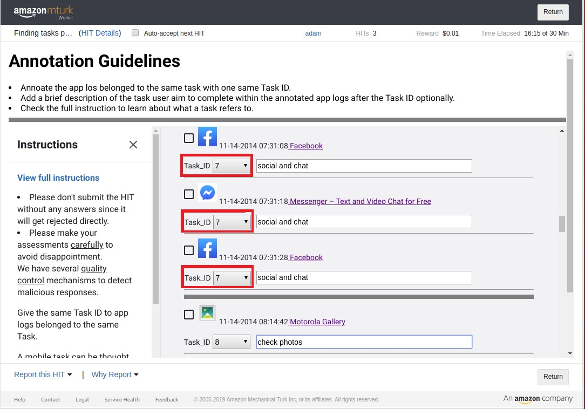

To acquire a ground-truth of mobile task labels, we conduct a mobile task annotation crowd-sourcing study. We sample the app usage logs for such annotation from the publicly available UbiqLog dataset [1,2], where participants were required to install the lifelogging app UbiqLog ontheir phones from November 2013 to January 2014. We select 20 users randomly, for which five-day of app usage logs are collected,including anonymized user ID, app package ID and corresponding timestamps.
To identify mobile tasks, we recruited three annotators from Amazon Mechanical Turk (https://www.mturk.com/), which is a crowdsourcing website for businesses (known as Requesters) to hire remotely located "crowd workers" for performing discrete on-demand tasks that computers are currently unable to do.
The annotation page presented to the assessors is as the screenshot below, including the app usage information such as timestamp, app icon, and app name. To provide relevant information to the assessors, we provided the URLs directed to the corresponding app info on Google Play, where the assessor could browse the detailed description of app functionalities, content and user comments of this app. Each assessor was asked to select a Task ID number from the drop-down menu to label an app usage, and each app usage log belonged to the same task was labeled with the unique sametask ID as shown in the screenshot. The annotators were also asked to optionally write a short description for each task.
A detailed guideline was presented to the assessors from the link View full instructions on the left side, describing in general what a mobile task is and showing several examples demonstrating what constitutes a mobile task.
After aggregating the assessors’ annotations, we ultimately obtain a collection of 1414 tasks annotated out of 20 users’ app usage logs.The basic statistics of those annotated tasks are shown in the Table below.
| # Users | # Logs | # Apps |
|---|---|---|
| 20 | 3558 | 184 |
| # Tasks | # Single-log Task | # Multi-log Task |
| 1414 | 717 (50.7%) | 697 (49.3%) |
Please cite the following papers without removing any one of them:
Yuan Tian, Ke Zhou, Mounia Lalmas, Dan Pelleg. "Identifying Tasks from Mobile App Usage Patterns." Proceedings of the 43rd International ACM SIGIR Conference on Research and Development in Information Retrieval. 2020.
Rawassizadeh, R., Tomitsch, M., Wac, K., & Tjoa, A. M. (2013). UbiqLog: a generic mobile phone-based life-log framework. Personal and ubiquitous computing, 17(4), 621-637.
Rawassizadeh, R., Momeni, E., Dobbins, C., Mirza-Babaei, P., & Rahnamoun, R. (2015). Lesson Learned from Collecting Quantified Self Information via Mobile and Wearable Devices. Journal of Sensor and Actuator Networks, 4(4), 315-335.